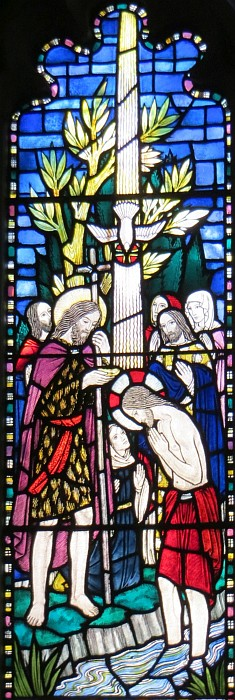
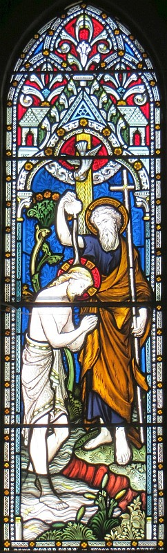

La Bouonne Nouvelle s'lon Luc: 3
Vèrsets 1-6

V'là tchi s'adonnit duthant la tchînzième année du règne dé l'empéreu Tibéthe, quandi qu'Ponce Pilate 'tait l'gouvèrneux d'Judée et Hérode 'tait l'mié-rouai d'Galilée et san fréthe Ph'lippe 'tait l'mié-rouai d'la contrée d'Ituthée et d'Trachonite et Lysanias 'tait l'mié-rouai d'Abilène, et duthant la bâle des grands prêtres Anna et Caïapha: v'là tchi vînt à Jean fis Zécharie dans lé d'sèrt la pathole dé Dgieu. I' s'en fut partout la contrée des bords du Jourdain à dêcliather un bâptême d'èrpenti pouor l'pardon d'péchés, coumme ch'est êcrit dans l'livre des patholes du prophète Esaie: "La vouaix du chein tch'est à braithe dans lé d'sèrt, 'Griyiz lé c'mîn du Seigneu, èrgriyiz ses sentes dé v'nue. Châque vallée s'sa accombliée et châque montangne et mont s'sont râtés, et tout chein tch'est teurt s'sa r'dréchi et les drédillets s'sont rabilyis, et tout l'monde des hoummes vèrra l'salut du Bouôn Dgieu.'"
Vèrsets 7-10
Et i' dit don ès cheins tchi vîndrent à li pouor la lav'thie: "Racachie d'tchilieuvres! Tchi qui vos a dit d'vos patchi hors d'la mârrisson tch'est à v'nîn? Ou dévthez mouontrer par l'mouoyen qu'ou vivez qu'ous avez r'nonchi vos péchés. Et n'dites pon à vos-mêmes, 'J'avons Âbréhan coumme not' péthe.' Ch'est en tchi j'vos dis qu'lé Bouôn Dgieu peut touônner même ches pièrres-là en êfants d'Âbréhan. Êv'chîn la hache tch'est pouor coper les réchinnes des bouais; et les cheins tchi n'portent pon d'bouôn frit s'sont abattus en fliantchis au feu."
Et l'monde li'entchêtîdrent, "Tch'est qu'j'éthons à faithe, don?"
Vèrset 11
Qué l'homme tch'a deux casaques en donne ieune au chein tchi n'n'a pon; et qué l'homme tch'a du mangi en faitche autant.
Vèrsets 12-15
Épis les tcheûteurs dé taxe vîndrent à li pouor la lav'thie et lî dîdrent, "Maît', tch'est qué j'dévthêmes faithe, nous?"
Et i' lus dit, "Né tâchiz pon d'tcheûter pus qu'ou dévthêtes."
Et les soudards lî d'mandîdrent, "Tch'est qué j'dévthêmes faithe, nous?"
Jean lus dit, "N'agu'nez pon l'drein liard ès gens, n'lus m'nichiz pon pouor qu'nou vos donne dé tchi, séyiz heutheurs auve raîque vot' gân."
Et l'monde 'taient à espéther en lus d'mandant si Jean 'tait l'Onguenné ou nânnîn.

Vèrsets 16-18
Jean rêponnit en dîthant à touos ieux, "Véthe, j'vos bâptîse atout l'ieau, mais y'en a iun tchi veindra tch'est pus grand qu'mé, dé tchi jé n'sis pon dîngne dé dêlachi les saûlés. Li, i' vos bâptîs'sa atout l'Saint Esprit et atout l'feu. I' manniétha san van pouor vanner san haûgard et ramâss'sa l'bouôn fronment dans sa grain'nie, mais l'êtrain en s'sa brûlé dans l'feu tchi n'sé dêteingn'na janmais." Et d'même i' cont'nanchait l'monde fais sus fais et annonchait la bouonne nouvelle au monde.
Vèrsets 19-20
Jean lichonnit l'Rouai Hérode pouor aver prîns Hérôdias, la bouonnefemme à san fréthe, et pouor tout l'restant d'la mauvaîtchi qu'il avait grée. Et pouor l'adgève-tout d'sa mauvaîtchi, Hérode blioutchit Jean en prison.
Vèrsets 21-22
I' s'adonnit qué quand tout l'monde avaient 'té bâptîsis, Jésû avait 'té bâptîsi étout auve ieux et i' 'tait à prier. Êpis l'ciel s'ouvrit et l'Saint Esprit d'valit dans la r'sembliance d'eune colombe, et eune vouaix pâlit du ciel et dit, "Tu'es man fis, l'chein qu'j'aime bein, et j'sis rêjoui en té."
Viyiz étout:
- La Bibl'ye
- La Bouonne Nouvelle s'lon Luc: 1
- La Bouonne Nouvelle s'lon Saint Luc, chapitre iun, vèrsets 1-4
- La Bouonne Nouvelle s'lon Luc, Chapitre 1, vèrsets v-xxv
- L'Êvangile sélon Saint Luc, chapitre iun, vèrsets 26-38
- L'Êvangile sélon St.-Luc: chapitre 1 versêts xxvi à xxxviii - eune aut' vèrsion
- L'Êvangile sélon Saint Luc, chapitre iun, vèrsets 26-38 - eune aut' vèrsion
- La Bouonne Nouvelle s'lon Luc, Chapitre 1, vèrsets 39-56
- La Bouonne Nouvelle s'lon Luc: 2
- L'Êvangile sélon St.-Luc: chapitre 2 versêts i à vii
- L'Êvangile sélon St.-Luc, Chapitre deux, Vèrsets 1 à 7- eune aut' vèrsion
- L'Êvangile sélon Saint Luc, chapitre 2, vèrsets viii à xx
- L'Êvangile sélon St.-Luc, Chapitre deux, Vèrsets 8 à 20- eune aut' vèrsion
- L'Êvangile sélon St.-Luc: chapitre 2, versêts viii à xx - eune aut' vèrsion
- L'Êvangile sélon St.-Luc: Chapitre 2, Versêts 8 à 20 - eune aut' vèrsion
- La Bouonne Nouvelle s'lon Luc Chapitre 2, Vèrsets 21-24
- La Bouonne Nouvelle s'lon Luc, Chapitre 2, vèrsets 25-33
- La Bouonne Nouvelle s'lon Luc, Chapitre 3, vèrsets 23 à 38
- La Bouonne Nouvelle s'lon Luc: 4
- La Bouonne Nouvelle s'lon Luc: 5
- La Bouonne Nouvelle s'lon Luc: 6
- La Bouonne Nouvelle s'lon Luc: 7
- La Bouonne Nouvelle s'lon Luc, Chapitre 8
- La Bouonne Nouvelle s'lon Luc: 9
- La Bouonne Nouvelle s'lon Luc: 10
- Lé Bouôn Samathitain
- La Bouonne Nouvelle s'lon Luc: 11
- La Bouonne Nouvelle s'lon Luc: 12
- La Bouonne Nouvelle s'lon Luc: 13
- Luc: 14
- La Bouonne Nouvelle s'lon Luc, 15
- La Bouonne Nouvelle s'lon Luc, Chapitre 15, vèrsets viii-x
- L'Êfant Prodigue
- La Bouonne Nouvelle s'lon Luc: 16
- La Bouonne Nouvelle s'lon Luc: 17
- La Bouonne Nouvelle s'lon Luc: 18
- La Bouonne Nouvelle s'lon Luc, Chapitre 19
- La Bouonne Nouvelle s'lon Luc, chapitre 19, vêrsets 1-10
- L'Êvangile sélon Saint Luc, chapitre 19, vèrsets 42-44
- La Bouonne Nouvelle s'lon Luc: 20
- La Bouonne Nouvelle s'lon Luc, Chapitre 20, vèrsets 20-26
- La Bouonne Nouvelle s'lon Luc, Chapitre 21
- La Bouonne Nouvelle s'lon Luc: 22
- La Bouonne Nouvelle s'lon Luc, Chapitre 23
- La Bouonne Nouvelle s'lon Luc, Chapitre 24
- La Bouonne Nouvelle s'lon Saint Luc, chapitre 24, vèrsets 36-43